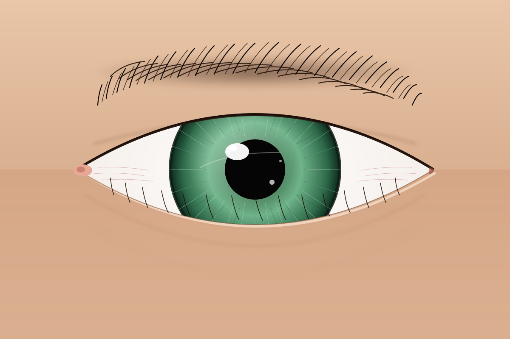

A Study of the Human Eye
Hand-authored SVG · 3-agent build

Rendered entirely in vector code, this portrait studies the architecture of the eye — the sclera and its faint vessels, the layered green iris with its radial fibres and limbal ring, the catchlights that bring it to life, and the lashes that frame it. No pixels, no photography. Just geometry, gradient, and patience.